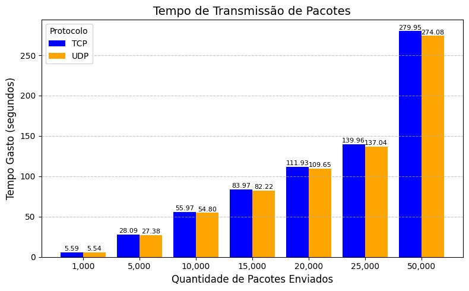

Relatório do Trabalho de Redes 2
Comparações entre TCP e UDP
Código Fonte
1. Introdução
Este relatório descreve os experimentos e resultados obtidos na comparação de desempenho entre os protocolos de transporte TCP e UDP, visando responder a pergunta: na prática, quanto o TCP é melhor que o UDP? Portanto, a seguir serão apresentados os testes realizados utilizando a linguagem Python, e os resultados obtidos para comparação entre os protocolos. Por fim, apresentamos nossas conclusões a partir dos resultados obtidos.
2. Experimentos
Nesta seção, apresentaremos os experimentos realizados na comparação entre os protocolos TCP e UDP, detalhando sua execução, objetivos e resultados.
Todos os experimentos foram baseados em envio de pacotes com dados em memória, ou seja, grandes strings geradas em código, evitando a leitura de arquivos, o que poderia mascarar os resultados. Além disso, todos eles foram executados no LAB 3 do Dinf.
OBS: Os valores de “Tempo Total” dos experimentos podem ser levemente diferentes caso calculados com os valores de “Tempo por Pacote” por conta dos pequenos overheads de execução da linguagem python.
2.1. Experimento 1: Envio de pacotes de 65kb
Este primeiro experimento teve como intuito enviar um grande conjunto de pacotes, cada um contendo uma quantidade de bytes próxima a máxima possível. Dessa forma, o objetivo deste teste foi verificar como seria o comportamento do TCP e UDP em cenários com grande fragmentação de pacotes IP.
As configurações deste experimento foram as seguintes:
- Envio de 10.000 pacotes;
- Pacotes com 65.500 bytes.
Desta forma, foram enviados aproximadamente 0,6GB de dados neste cenário. As métricas coletadas foram tempo total, tempo por pacote, e perda de pacotes (no caso do UDP). Os resultados obtidos são apresentados na Tabela 1, sendo eles médias de 5 execuções.
OBS: Os números de pacotes deste experimento foram definidos por conta da velocidade de transmissão da rede do LAB 3, que se mostrou mais lenta que os demais laboratórios.
| Protocolo | Tempo total (s) | Tempo por pacote (s) |
|---|---|---|
| TCP | 55,97 ± 0,04 | 0,0055 |
| UDP | 54,80 ± 0,04 | 0,0054 |
Tabela 1. Resultados de tempo para o UDP e TCP com pacotes de 65KB. Valores em Tempo ± desvio padrão. Os resultados de desvio padrão do tempo por pacote foi omitido pois foram bem próximos de 0.
A Tabela 1 demonstra que, em média, o UDP foi 1 segundo mais rápido que o TCP no tempo total, e 0,0001 segundo no tempo por pacote, demonstrando um leve ganho de velocidade do UDP neste cenário hipotético. Interessantemente, a quantidade de pacotes perdidos pelo UDP nesta configuração foram relativamente baixos, sendo em média 1 pacote dos 10.000 enviados.
Logo, considerando a rede do LAB 3 do Dinf, e pacotes com uma quantidade próxima ao máximo possível para o IP, o UDP se mostrou levemente mais rápido, ao passo de não perder tantos pacotes como o que seria esperado.
2.2. Experimento 2: Envio de pacotes de 1KB (menor que 1 MTU média)
Neste segundo experimento, o processo de envio foi idêntico ao teste anterior, porém, neste cenário foram enviados pacotes de apenas 1KB, ou seja, menores que uma MTU, não causando fragmentação do IP. Dessa forma, o intuito deste experimento foi verificar como seria o comportamento do TCP e UDP em casos de não fragmentação.
As configurações deste experimento foram as seguintes:
- Envio de 655.000 pacotes;
- Pacotes com 1.000 bytes.
A quantidade de pacotes foi definida para garantir que o volume de bytes transmitido neste experimento fosse equivalente ao anterior, buscando gerar um cenário com mesma carga de transmissão. As métricas coletadas e a quantidade de execuções são as mesmas que do experimento anterior. A Tabela 2 apresenta um resumo dos resultados obtidos.
| Protocolo | Tempo total (s) | Tempo por pacote (s) |
|---|---|---|
| TCP | 59,31 ± 0,78 | 0,000079 ± 0,0000013 |
| UDP | 59,52 ± 0,92 | 0,000074 ± 0,0000017 |
Tabela 2. Resultados de tempo para o UDP e TCP com pacotes de 1KB. Valores em Tempo ± desvio padrão.
Neste experimento, os "overheads" causados pela linguagem python podem induzir que o UDP foi virtualmente equivalente ao TCP quando analisado o resultado de tempo total. Entretanto, caso o cálculo de "tempo total" fosse feito a partir dos tempos por pacote, teríamos 51,75 segundo para o TCP e 48,47 segundos para o UDP, evidenciando uma grande diferença de tempos entre os protocolos.
Porém, neste cenário de teste o UDP perdeu, em média, 807 pacotes, sendo necessário a retransmissão e também organização deles no cliente. Desta forma, caso essas funcionalidades fossem implementadas na aplicação, os tempos de transmissão de ambos os protocolos podem acabar se aproximando, ao ponto de se tornarem relativamente equivalentes.
2.3. Experimento 3: Aumento gradativo de quantidade de pacotes de 65KB enviados
Este último experimento teve como intuito responder a seguinte questão: Quantos bytes enviados são necessários para evidenciarmos a diferença de velocidade entre TCP e UDP? Desta forma, buscando responder essa pergunta, o seguinte experimento foi construído:
- Envio de 1.000, 5.000, 10.000, 15.000, 20.000, 25.000 e 50.000 pacotes;
- Pacotes com 65.500 bytes.
A ideia geral foi incrementar gradativamente a quantidade de pacotes enviados, visando encontrar o ponto onde a diferença de tempo entre o TCP e o UDP se torna mais evidente. Os resultados obtidos, sumarizados na Figura 1, são médias de 3 execuções para cada quantidade de pacotes enviados.

Figura 1. Comparação do tempo necessário para enviar pacotes com TCP e UDP.
Como demonstrado na Figura 1, em todos os cenários o UDP se mostrou mais rápido que o TCP, porém, apenas com 10.000 pacotes de 65kb que pode-se notar uma diferença maior que 1 segundo, e apenas com 50.000 pacotes observa-se uma distância de 5 segundos entre os protocolos. Em suma, quanto maior a quantidade de pacotes e, consequentemente, maior quantidade de bytes, o UDP tende a se apresentar cada vez mais rápido que o TCP.
Além disso, de forma semelhante ao experimento 1, a quantidade de pacotes perdidos do UDP se manteve baixa em média (1 a 4 pacotes, sendo 4 evidenciado apenas em uma transmissão no cenário de 50.000 pacotes). Porém, vale ressaltar que esta situação é de certa forma atípica, sendo, possivelmente, ocasionada pela rede do LAB 3 do Dinf.
3. Conclusões
Neste trabalho foram apresentados alguns experimentos para comparação entre os protocolos TCP e UDP, visando responder a pergunta: na prática, quanto o TCP é melhor que o UDP? Os resultados obtidos apontaram que, em média, o UDP tende a ser mais rápido que o TCP, porém ao passo de não fornecer nenhuma garantia de entrega ao cliente.
Entretanto, mesmo no cenário com a maior quantidade de bytes transmitidos (experimento 3 - envio de 50.000 pacotes de 65KB) o UDP foi apenas aproximadamente 5 segundos mais eficiente que o TCP para transmitir o total de aproximadamente 3GB de dados, sendo esta diferença possivelmente não relevante para a maioria das aplicações, e ainda perdendo alguns dos pacotes enviados.
Além disso, a necessidade de desenvolver manualmente todos os mecanismos de garantia de entrega na aplicação, visando manter a confiabilidade da transmissão, pode levar o UDP a se aproximar do desempenho do TCP, caso estes mecanismos não sejam desenvolvidos apropriadamente (por exemplo, desenvolvido sem otimizações, ou com linguagens que possuem muitos overheads como python).
Desta forma, o TCP se apresenta como uma opção mais segura, ao passo de possuir um desempenho surpreendente, levando em consideração todos os controles executados por ele, limitando o uso do UDP para situações onde é impossível utilizar o TCP.
Por fim, vale ressaltar que os resultados apresentados podem ter omitido informações relevantes para a comparação entre os protocolos, visando que todos os experimentos foram executados em apenas um laboratório do Dinf. Portanto, para comparações mais efetivas e reais, pesquisas e testes extensos podem ser aplicados em trabalhos futuros, visando cobrir a grande maioria dos cenários de uso, obtendo resultados mais concisos.